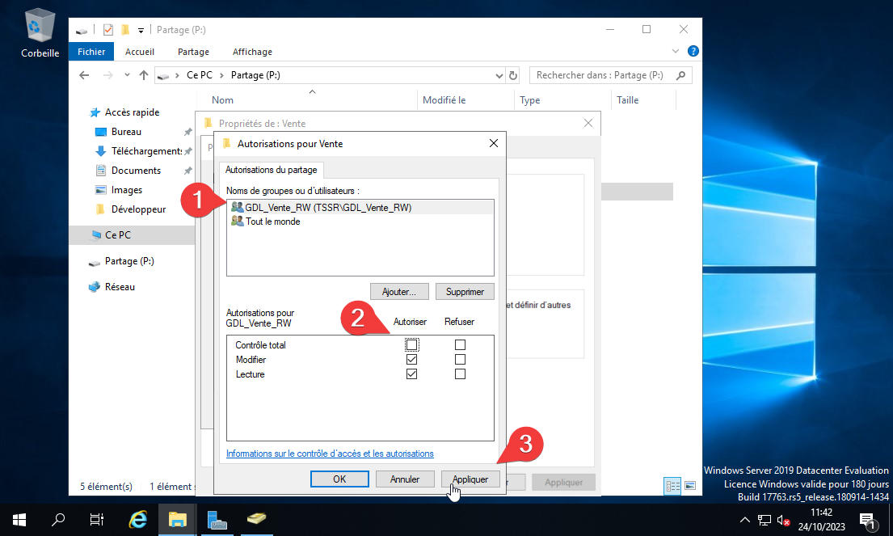

AGDLP
1) Pour ajouter un utilisateur sur son Server Windows via l'AD, ce rendre
sur le Gestionaire de serveur, dans l'onglet “outils” (1),
puis seléctionner “Utilisateur et ordinateur Active Directory” (2) :
2)La fenêtre “Utilisateur et ordinateurs Active Directory” s'ouvre, clic
sur son domaine ici “TSSR.LOCAL” puis sur la fenêtre de droite clic droit
“Nouveau” (1),
puis “Utilisateur” (2) :
3) La fenêtre “Nouvel objet - Utilisateur” s'ouvre, Indiquer les informations
voulu (1),
puis clic sur suivant (2) :
4) Indiquer un “mot de passe” (1) et
le “confirmer” (2),
choisir les options à coché ou décocher, puis clic sur suivant :
5) On voit un descriptif de l'utilisateur que l'on vient de crée, il ne
reste qu'a clic sur “terminé” (1) et
notre utilisateur est crée :
6) Pour intégrer notre utilisateur a une O.U, clic droit sur notre utilisateur
fraichement crée (1),
puis “déplacer” (2) :
7) La fenêtre “Déplacer” s'ouvre on choisi l'O.U dans laquelle on veux
le déplacer (1),
puis clic sur “OK” (2) :
8) Notre utilisateur fais maintenant parti d'une OU, nous allons maintenant
crée un Groupe Global pour ce faire, clic droit dans la fenêtre de gauche
dans notre OU (ici Vente), puis “Nouveau” (1),
et “Groupe” (2) :
9) La fenêtre “Nouvel objet -Groupe” s'ouvre, ici on entre un Nom de groupe
(1)
, on coche bien “Globale” (2),
on vérifie que c'est bien un groupe de type “Sécurité” (3),
puis "OK" (4) :
10) Maintenant on veux faire rentré notre utilisateur dans le groupe global
que l'on vient de crée, pour ce faire on clic droit sur notre utilisateur
(1)
, puis “Ajouter à un groupe…” (2) :
11) La fenêtre “Selectionnez des groupes” s'ouvre, dans l'encadrer
“Entrer les noms des objets à séléctionner” mettre le nom du groupe auquel
on veux l'intégrer (1),
puis “Vérifier les noms” (2),
si le nom du groupe a été corréctement entrer il suffit de cliqué sur ok,
sinon une nouvelle fenetre s'ouvre ou l'on peux choisir le groupe dans
lequel on veux l'interger puis OK :
12) Maintenant que notre utilisateur est dans un groupe global, nous allons
crée 3 groupe “Domaine locale” un “RW” (Read & Write) un “RO” (Read
Only), et un “FA” pour (Full accès), on suis la procéure pour crée un groupe,
on lui donne un “Nom du groupe” (1) on
choisi cette fois “Domaine locale” (2) on
vérifie qu'on est toujours en sécurité (3) puis
“OK” (4),
on répete l'opération pour les 3 Groupe “Domaine Locale” :
13) Maintenant que nos 3 "GDL" sont crée on va vouloir allé mettre notre
groupe global dans chaque “GDL”, pour se faire “Clic droit” sur notre groupe
global (1),
puis “Ajouter à un groupe” (2) :
14) Dans l'encadrer “Entrer les noms des objets à séléctionner” entrer
le début du nom de nos "GDL" (1),
puis “Vérifier les noms” (2),
la nouvelle fenêtre “Nom multiples trouvés” s'ouvre et ici séléctionner
les "GDL" dans lesquelles on veut l'implimenter (3)
(4)
(5),
(on peut laisser appuyer sur “ctrl” et séléctionner plusieurs groupe en
même temps, sinon repeter l'opération pour tous les groupes), puis OK :
15) Maintenant nous allons crée un dossier dans notre Disque partager
(1)
, pour l'exemple ce sera “Vente” (2) :
16) C'est ici que nous allons gérer les permissions du dossier, pour ce
faire clic droit sur le dossier (1),
puis “Propriétés” (2) :
(Il y a deux façon de faire en passant par l'onglet “Partage” ou en passant par l'onglet “Sécurité”)
17) La fenêtre “Propriété de vente” s'ouvre, clic sur l'onglet “Partage”
(1)
puis “Partage avancé...” (2) :
18) La fenêtre “Partage avancé” s'ouvre, on commence par coché “Partager
ce dossier” (1),
puis on va gérer les “Autorisation” (2) :
19) La fenêtre “Autorisation pour Vente” s'ouvre, on clic sur “Ajouter…”
(1)
:
20) La fenêtre “Sélectionnez des utilisateur …" s'ouvre, Dans l'encadrer
”Entrer les noms des objets à selectionnner" (1) écrire
le début du groupe désiré ici “GDL” puis, “Vérifier les noms” (2),
la fenêtre “Noms multiples trouvés” s'ouvre, séléctionner le ou les groupe(s)
voulu (3),
puis OK :
21) Dans la fenêtre “Autorisaions pour vente”, en fonction du groupe qu'on
a choisi (1),
on accorde les droits en fonction (2),
puis on clic sur “Appliquer” (3) et
OK :

22) Dans le disque partager, on repete l'opération clic droit “Propriété”,
“Partage”, “Parage avancé”, “Autorisation” on ajoute notre GDL(Groupe domaine
locale) voulu (1),
et on lui donne les droits adéquate (2) :
23) Pour la séconde méthode on retourne sur notre disque partager, sur
le dossier vente clic droit, “Propriété” et se rendre sur l'onglet “Sécurité”
(1)
, puis “Avancé” (2) :
24) On clic sur “Désactivé l'héritage” (1),
puis on supprime toutes les autorisations héritées de cet objet (2) :
25) Ensuite, on clic sur “Ajouter" (1),
puis “Sélectionnez un principal” (2),
on entre le début du nom de notre GDL dans l'encadrer “Entrer le nom de
l'objet à sélectionner” (3),
puis “Vérifier les noms” (4),
on choisi la GDL que l'on veut (5) puis
OK :
26) On choisis les droits adéquate à accorder en fonction de la GDL qu'on
a choisi (1),
puis “OK” (2) :